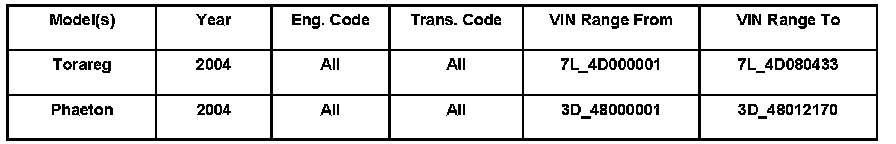
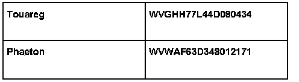

Ignition Switch - Emergency Key Removal Feature Deletion
ConditionIgnition/Starter Switch -E415- Deletion of Emergency Key Release Feature

48 06 03 Sept. 11, 2006 2010626, Supersedes T.B. Group 48 number 04-01, dated September 30, 2004 due to inclusion into ElsaWeb.
Technical Background
The ignition/starter switch -E415- has been changed to conform to Federal Motor Vehicle Safety Standard 114.
Prior to this change, the key could be removed from the ignition/starter switch by pressing the release button under a small protective cap on the ignition/starter switch when the shift lever was in a different position from Park.
The new ignition / starter switch, Part No. 3D0 905 865F 01C does not have the release feature.
Production Solution

Installation of new ignition/starter switch -E415-. as of.
Service
When ignition/starter switch -E415- replacement is necessary the latest version of Part No. 3D0 905 865F 01C must be installed.
Warranty
Information only.
Required Parts and Tools
No special tools required.
No special parts required, always see ETKA for the latest parts information.